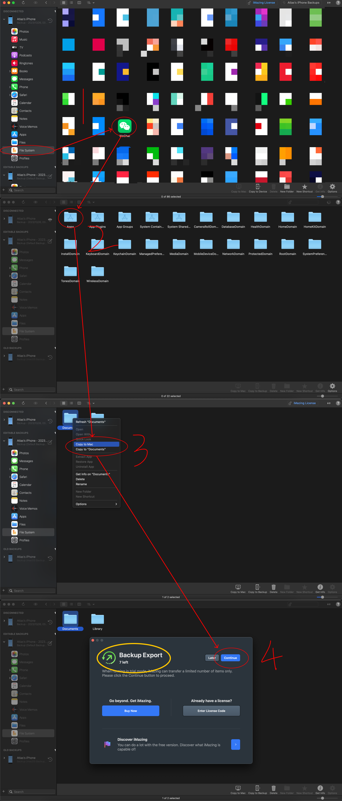
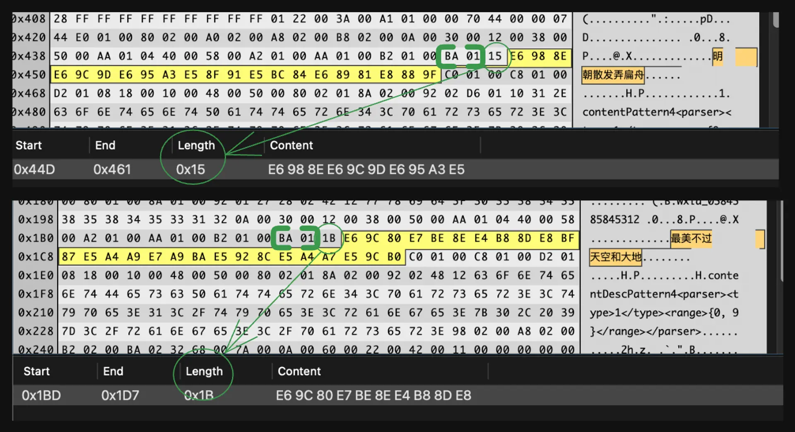

如何导出朋友圈数据
最终我成功的在 ios 系统中从 8.0.32 版本的微信里导出了自己的朋友圈数据。
我研究这件事的原因是在 2023.2.4 我的微信被封之后，我想要把自己的朋友圈内容导出来并重新展示。期间我搜索过不少资料，但是都是版本比较早的解决方法了。所以我觉得现在应该把自己的探索，和踩过的坑也记录下来。
提前声明：
- 我没有导出评论数据。因为我觉得没必要，但是如果真的有需求实现起来应该也不会太麻烦，我看到 MyWC_Message01 这张表里有明文存储的评论，但不确定是否是完整的，如果有需求可以对照着本篇教程自己继续研究。
- 我没有导出别人的朋友圈数据，同理没必要。但不难推测如果需要导出的话应该从哪张表入手。
- 我没有导出微信好友/聊天记录。我猜这可能一个常见的需求，但这方面我需求不大所以没有研究这个，不过大概率就是换张表导数据，不会很麻烦的。
- 我没有解析出视频号的分享。普通的链接分享是可以解析出来的，但是视频号实在过于迷雾重重，难以恢复出真实视频链接，而且我也很少转发视频号，没有太多解析这个的需求。
明确目标：导出朋友圈数据
假定现在的需求就是导出朋友圈数据，那么其实也分好几种情况，不同情况有不同的方法：
- 如果你是 WeChat User（而非微信用户），那么官方是提供导出数据接口的
- 如果是微信用户
- 如果你的微信没有被封，可以试试淘宝搜索“微信朋友圈”，有很多把你的微信朋友圈导出做成电子书之类的服务（其实我还挺好奇淘宝商家是怎么做的，不知道是不是也是通过缓存）
- 如果你的微信也和我一样被封了，或者虽然没有被封但是也对怎么导出数据很感兴趣，也可以试试接下来我会重点介绍的从手机缓存中恢复数据的这种方法。这个方法可行的原因是虽然微信账号被封了，但是自己还是可以访问自己的朋友圈的（万幸）。
缓存恢复数据法
顾名思义，此思路的方法是先确保微信本地已经把自己的朋友圈缓存了，然后把自己手机的数据导出，最后从导出的数据中找到相关的文件，然后从相关文件中提取出有用信息，如发布时间，朋友圈内容等，最后拼凑还原出完整的朋友圈数据。
1. 本地缓存
打开微信，清空一下缓存（此步非必须，但是可以减少备份和拷贝所需的等待时间），然后打开自己的朋友圈，往下翻到最早的一条，将自己所有的朋友圈缓存到本地，每张图也都需要打开，不然缓存的只有缩略图。为了确保全部缓存成功，可以翻页完成之后断网确认是否还能看到，能看到意味着已经缓存成功。
2. 导出缓存文件
因为我的微信是在 ios 系统上登陆的，被封号之后我不确定是否还能在别的设备上登录了（担心夜长梦多，如果尝试次数太多本身能登录的 ios 设备也登不上去了就得不偿失了），所以只能通过手机备份的方式导出缓存。安卓系统应该可以直接导出缓存文件，但是 ios 的机制是不能直接访问 App 自己的缓存文件的，所以必须通过手机整体备份的方式。
我使用的工具是 iMazing，免费版的就够。首先备份手机数据，然后找到微信的 Documents 文件，导出即可，步骤如下图。免费版 iMazing 有 10 次导出机会。

在 Documents 文件夹里，存在着至少一个以 Hash 字符串命名的文件夹，像这样的
eb8a6093b56e2f1c27fbf471ee97c7f9
这样的文件夹中就存放着微信用户的个人数据。如果在这个手机上登陆过多个微信，则可能存在多个这样的 Hash 命名的文件夹，如果不确定哪个是自己想要导出的，可以都导出看看。
找到 ./Documents/{hash}/wc/wc005_008.db 和 ./Documents/{hash}/DB/WCDB_Contact.sqlite，这两个就是需要解析的缓存文件了。前者是和朋友圈数据相关的表格，后者是和好友数据相关的表，这里我们需要这张表只是为了解析出自己账户的头像。
（踩过的坑：新版本的 Mac 不能通过 iTunes 备份了）
3. 解析缓存
TL;DR 下载这个 repo，把 wc005_008.db 和 WCDB_Contact.sqlite 拖到根目录，修改 main.py 里的 hash 为你自己的 hash，然后运行 python3 main.py 即可导出一份 moments.json。
关于脚本还需要特别说明的是：
我在脚本中我设了一个 dl_img 的参数，如果为 True 的话会把所有图片都下载到本地。毕竟微信号都已经被封了，谁知道朋友圈的图片会被 host 到什么时候，况且如果频繁的站外访问朋友圈图片谁知道会发生什么，我建议趁还能下载的时候还是把图片都下载到本地比较保险。
对于分享链接类的 moment，我不仅解析了分享的链接本身，还解析了微信本身对这个链接缓存的图片/标题/简介，完全还原了朋友圈如何对一个链接的渲染。这样做是因为曾经分享的很多链接已经 404 了……如果只解析链接意义不大了，我觉得有必要把当时缓存的数据都解析出来，至少还原出“封皮”。
当然这个 repo 里的脚本之所以这样编写背后有很多的分析，我会简要介绍一遍，大家可以依照自己的兴趣选择是否跳过本节接下来的部分。
首先微信使用的是 SQLlite 缓存，想要分析 wc005_008.db 这个数据库的话可以使用这款开源的 sqlite browser。经过简单分析，发现 db 里有大量 MyWC01_ 开头的表，自己账户的朋友圈数据都存在 MyWC01_{$hash} 这张表里，$hash 还是刚才目录的那个 hash，这个 hash 应该是代表自己账户的某种 id，推测其他的 MyWC01_... 代表的是好友的朋友圈的数据。
进入存储自己朋友圈数据的表，发现有两个字段非常重要，Buffer 和 id。如果以 utf-8 方式解码 Buffer 字段，可以看到有很多明文字段，有的是图片 url，有的是好友的名称，有的是之前发过的朋友圈内容。进而推测出从 Buffer 字段中我们可以恢复出朋友圈数据。
这里稍微先偏离一下主线，说一下“以 utf-8 方式解码 Buffer 字段”这件事。我并没有在这款 sqlite browser 中看到有办法可以使用 utf8 方式解码二进制文件然后直接阅读，最后我的做法是把这个表中所有 Buffer 字段都写入文件，然后使用 hex viewer/editor 来阅读分析。不过这其实也不顺利，我找了很多 hex viewer/editor，都不支持 utf8 的解码方式，最后发现最好用的也是我发现的唯一支持 utf8 解析的软件是 Synalyze It!，但是这个软件仅有两周的免费试用，之后需要支付 9.99 美元。我不知道是否有更好的方法来分析，希望能够和大家交流。
回到主线，我们继续分析 Buffer 字段，发现很难完整地理解这些数据的格式，但是尽管如此，我们完全可以根据一些固定的标识位识别出内容本身。
不同的字段都有对应的标识 Flag，如图片/内容/分享的链接等，这些字段在 Buffer 中表现的格式基本都是先出现 Flag，紧跟其后的一到两个字节是标记 Message 长度的，再之后是 Message 本身。
以正文内容为例，下图是两条朋友圈内容的二进制文件，观察后很容易发现，b'\xba\x01' 就是正文内容的标识符。

至此思路基本就清楚了，首先确认都有哪些字段需要解析（最终确认需要解析的字段有正文内容，图片链接，分享链接，分享链接渲染出的图片，分享链接渲染出的标题，分享链接渲染出的描述），然后识别出我们需要解析的字段的 flag，最后继续想办法解析 message 的长度和偏移量就好。
但是还差最后一块拼图——发布时间。直觉来讲表格中的另外一个字段 id 和时间非常相关，因为这些数字随着实际时间一起递增，所以猜测是某种基于时间戳的算法，最后基本上确定了实际 create_time 和 id 的转换算法是
1 | create_time = id / 8388607990 |
这个公式中的 magic number 8388607990 由 MyWC_Message01 推断而来。这是一张存储评论的表，虽然我们没有原内容的准确发布时间，但是从这张表的 create time 字段我们可以得知评论的实际发布时间。这张表中的另一个字段 id 对应的应该是原 post 的 id。
我们可以简化的认为，每个 post 的第一个回复的 create time 和 id 之间的关系就是原 post 和 id 之间的关系，因为第一个回复的时间最接近原 post 实际的发布时间。那么我们可以直接取表中最大的 Id/CreateTime 作为我们的魔法系数。
1 | SELECT MAX(ID/CreateTime) FROM MyWC_Message01 |
实际上通过评论得出的魔法系数还是略微小了一点点，为了更精确，最后我又抽样几条自己的朋友圈数据，对照微信 app 前端显示的发布时间，进行一些微调，最终得出了 8388607990 这个数字。基本上这个公式可以保证和实际发布时间误差都在1分钟内。
总之大概思路就是如此了。当然具体还有很多的细节，如果有兴趣可以直接参考代码的实现。
（踩过的坑：最开始参考了这个 repo 的代码很多，但是这个 repo 里的代码是按照 plist 格式解析 Buffer，而实际上现在版本的缓存不知道是什么格式但反正不是 plist 格式）
参考
感谢前人栽的树：